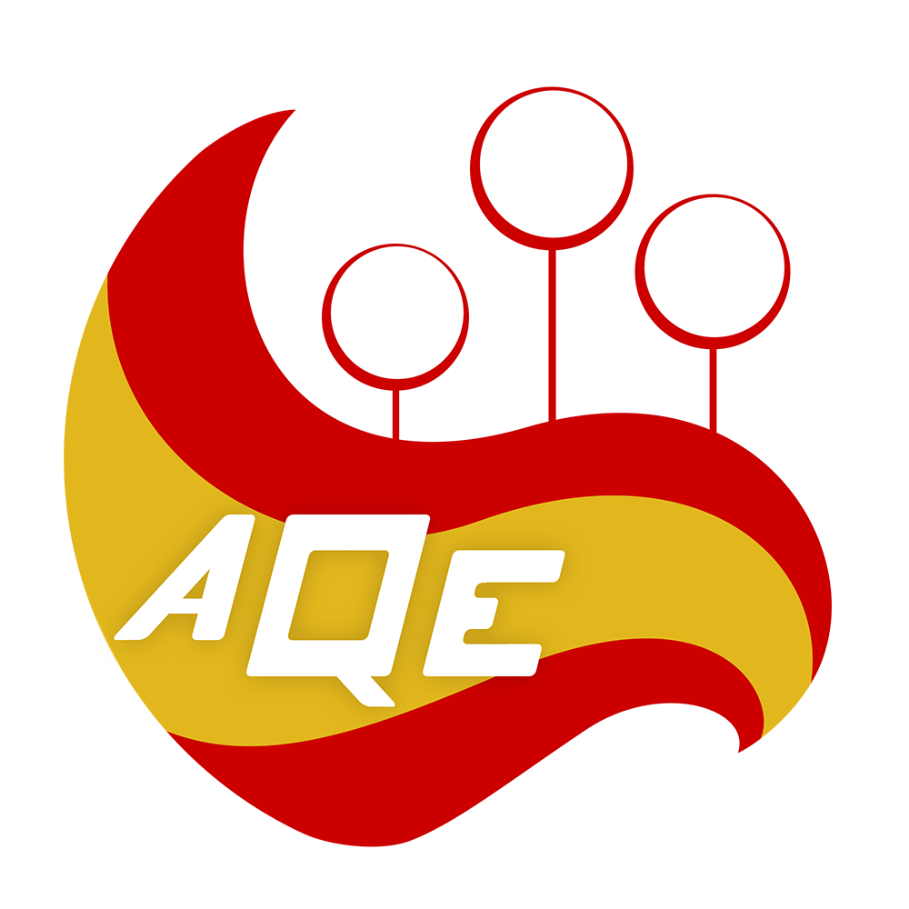
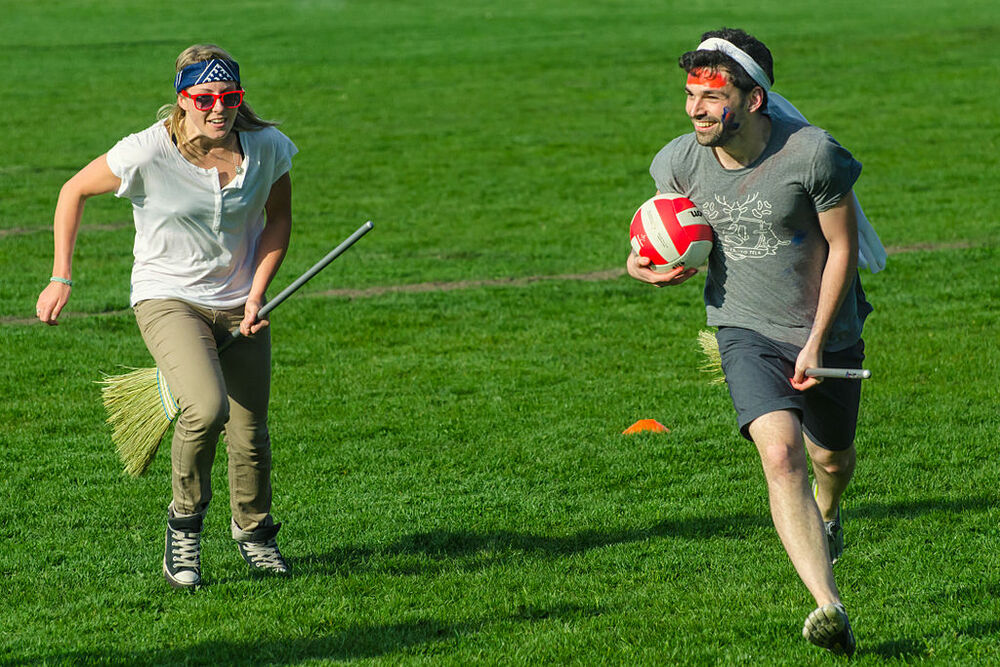

Asociación de Quidditch de España

La Asociación Quidditch España, abreviado en AQE, es el órgano de gobierno del quidditch en España. Fue en la segunda NGB de la Península ibérica en 2015, después de la AQC.
La AQE se encarga del desarrollo del quidditch en España, de ayudar a los nuevos equipos, crear torneos dentro de su NGB y la selección.
Quidditch Muggle
Resumen
El quidditch es un deporte basado en el Quidditch, deporte ficticio creado por la escritora británica JK Rowling en la saga de novelas de Harry Potter. La organización que lo regula es la International Quidditch Association (IQA). Como en el deporte ficticio, el quidditch muggle se compone de 7 jugadores por equipo: 3 cazadores, 2 golpeadores, 1 guardián y 1 buscador. El quidditch ha sido adaptado para jugarlo en el suelo, con el juego restringido a un campo equivalente en tamaño a un campo de hockey hielo. El deporte fue adaptado con elementos de otros deportes como el rugby, balón prisionero, "tag", "wrestling” y lacrosse.
Descripcion
res aros-portería son situados a cada lado del campo. Las porterías suelen ser tubos circulares montados sobre cañerías de PVC. Todos los jugadores deben llevar una escoba entre las piernas en todo momento, no llevarla es considerado falta. Un balón de voleibol es utilizado como quaffle, mientras que pelotas de balón prisionero se usan como bludgers. Mientras que la snitch es un objeto mágico dentro de las novelas de Harry Potter, en el quidditch la snitch es una simple bola de tenis dentro de un calcetín atado a la parte posterior de la cintura del corredor de la snitch. El corredor de la snitch es un jugador neutral vestido de amarillo o dorado. Una vez liberado, el corredor de la snitch (y, por lo tanto, la snitch en sí) puede moverse por una área más allá del campo de juego. Cuando se juega en un campus escolar o universitario, el área suele ser el campus entero. Los buscadores deben buscar al corredor alrededor del campus; si no logran darle caza, el corredor vuelve al campo después de un tiempo predefinido.

El partido empieza con la quaffle y las bludgers alineadas en el centro del campo y los jugadores alineados en sus respectivas porterías. Después de que la snitch desaparezca del campo de visión, el árbitro grita “Brooms Up!” para empezar el partido. El partido continúa hasta que la snitch es cogida. Cada gol vale 10 puntos y se otorgan 30 puntos al equipo que captura la snitch y el equipo con mayor número de puntos gana.